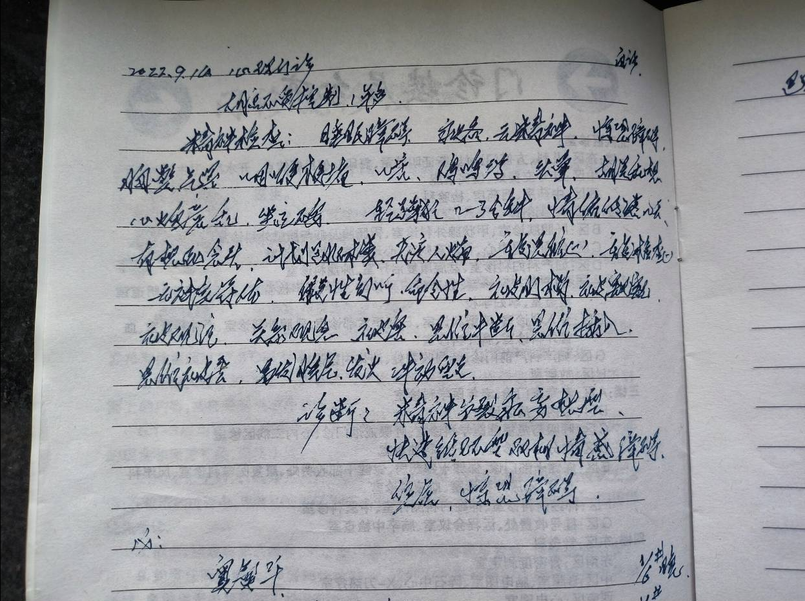
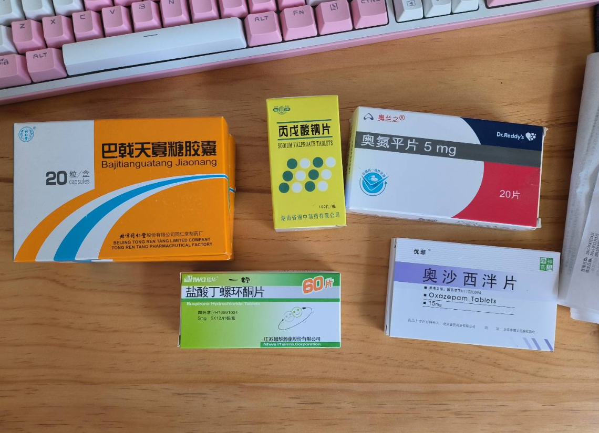
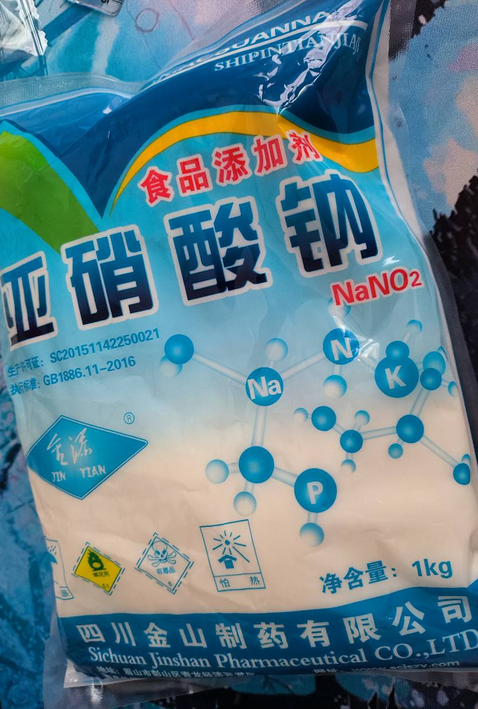
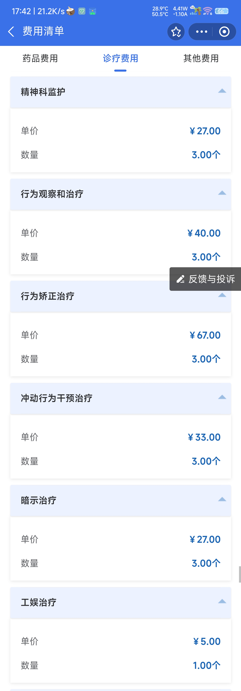
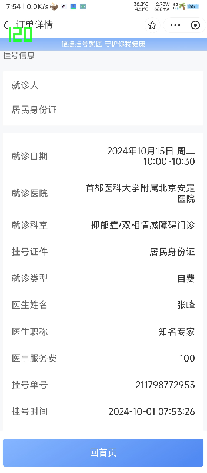

# 死亡？
即使是现在，已经自杀过一次… 我还是认为死亡应该是人出生就有的权力，不应该被限制，一个人明明很痛苦了，为什么还要继续活着？
我发现，我只是想逃避痛苦罢了…
# 抑郁
一开始，大约是 2022 年 8，9 月份，每个月总有那么几天会莫名其妙情绪低落，无论做什么，即使是以前最喜爱的内容也变得无趣。还记得有一天晚上我和我朋友小尘一起玩游戏，屏幕上是我最喜欢的游戏，陪伴我的也是玩了很久的好朋友。可我…… 没有一点开心的感觉，只感觉没有意思。那晚，我几乎没怎么说话，脑子里想的全是贬低自己的内容，我无法控制自己的大脑让它不要想这些东西。我的状态变得很差很差
于是我去了省医院的心理门诊，主任医师的号。去了问了你一些问题，我绝对不会忘的是其中有个问题 “你脑中会不会有说话声？” 我当时是想说我自己的想法，会脑子里讲给自己听，类似于自己和自己说话这样，其实全是自己的想法。很好，喜提精神分裂症
他给我的诊断是：精神分裂症妄想型；快速循环型双相情感障碍；焦虑；惊恐障碍。然后开了一堆药，很贵，好像花了快 500 还是 500 多？但是现在才知道，这堆药里并没有抗抑郁的
当我看到有个药物（奥氮平）说明书有一米长，副作用太大了，我就没有吃
现在知道了，幸亏我没吃，要不然体重奔 300 斤去了 当时我已经 200 斤了应该（
过了几个月，我去复查，还是看的这个大夫（省人民医院只有这一个心理门诊主任医师）。我和他说我脑子里的声音是自己的，大夫；“正常人脑子里不会有声音”。一句话驳回我，又听说我没有吃药，又开了一堆药，让我回去吃。诊断建议还是写着 “精神分裂症”
然后我再也没去看过那个大夫
# 买药（亚硝酸钠）
在那之后的每个月，通常是月底，总会有 3-5 天情绪低落。身体没有力气，什么都不想做，只想躺在那里，脑子里全是一些负面的东西……
2023 年 2 月，我买了一袋亚硝酸钠。说起来也很好笑，这袋亚硝酸钠的价格是 14.4（谐音 4）
我要是没记错，我下单的时候是深夜，那晚应该是失眠了…… 脑子里都是不好的想法，不然也不会做这个决定吧
但到货后并没有直接吃，还是忍住了…… 当时应该还是有点理智的，想死，但没那么强烈。也有可能是还怕死？不懂
亚硝酸钠就是工业盐，理论上应该很咸，所以我装成胶囊，保存起来
后来我发现，亚硝酸钠涨价了。涨到 20 多一袋，同一个商品链接，现在不用看了，大约在 6 7 月份就全部都下架了
# 再一次…… 医院
2023 年 10 月 27 日，通常每次都是月底来抑郁，这次也不例外。因为在学校，于是决定明天让舍友陪着我换一家医院（其实就是精神病院）去精神科挂号看大夫
这次我专门询问大夫，我脑子里自己的想法算不算精神分裂症？
这次的大夫说：“每个人脑子里都有自己的意识，自己的想法，这怎么能算精神分裂症呢？”
然后大夫给我开了 SDS（抑郁自评量表），SAS（焦虑自评量表），SCL-90（症状自评量表）
如果你觉得你也有抑郁情况，也可以尝试测验，这里我搜罗了一些网站（不保证能用）：
抑郁自评量表 (SDS) - 在线工具 (toolonline.net)
焦虑自评量表 (SAS) - 在线工具 (toolonline.net)
SCL-90 症状自评量表 (joukovaara.github.io)
做完，拿到结果：
- SDS：82.5（重度抑郁）
- SAS：66.25（中度焦虑）
- SCL-90：332 分
其中 SCL-90 详细得分：
- 躯体化 36
- 强迫症状 33
- 人际关系敏感 34
- 抑郁情绪 61
- 焦虑情绪 40
- 敌对情绪 26
- 恐怖情绪 21
- 偏执情绪 26
- 精神病性 29
- 其他 26
这次大夫给开的药物就两种，丙戊酸钠缓释片，喹硫平片。第一天加起来总共只用吃一片半，大夫人很好，看到我还是学生，开的药物也不贵
当然也是后来我才知道，这两种药物里还是没有抗抑郁的
# 自杀
接着是……2023 年 10 月 29 日，哈！就隔了一天，因为发生了一些事情，中午就做好了决定，选在今晚自杀
啊…… 我是有在吃药的… 我现在还记得我吃了半片喹硫平，副作用导致我那天睡了 11 个小时
但是没有用，做好决定了就没人拉的住我
当晚 21:50 左右，我接口要上厕所，从宿舍溜了出去，带上水杯和亚硝酸钠胶囊。坐在操场的椅子上，看到操场上人一个一个回去
我选择与我的朋友们打招呼道别，依次给他们发消息，算是最终道别
其中，小王，我的好朋友，发现我情况不对因此试图劝阻我的自杀行为。但是… 我都已经做好决定了，当时我的想法很固执，没人能劝的动我
在服毒之前已经吃了 2 片艾司唑仑（安眠药），目的是让自己能睡着，在睡梦中死去，可能这样能够不那么痛苦，因为看到许多人说亚硝酸钠自杀会呕吐啊腹泻啊之类的。我和小王聊着天，22:00 左右，5g 亚硝酸钠，是 10 颗胶囊。2 颗一口，没有任何犹豫，真的一点都没有犹豫，不像我朋友之前告诉过我的人到临死前会被本能的求生欲占上风。全吞下去了。当时是杯子里没水了，不然我当时还会继续吞。倒是听说亚硝酸钠 3g 致死，所以吃了 5g，这样肯定也会死
我把我已经服毒的消息告诉小王，我已经吃了。哈…… 我能感觉到他真的很着急，收到我消息的其他人也是，但是…… 我是不可能打 120 走急救的，听说洗胃很痛苦很难受的…
过了约 5-10 分钟吧，开始腿软了，走不动路了。所以找了一个垫子上坐下。顺便观察自己，听说亚硝酸钠会让血液变黑，我就开着灯观察自己，但是并没有，一切正常
先是过了一会来了一个人，询问我为什么在这里，我说：“没事，不用管我。” 于是走开了。又过了段时间，大约 22:20 左右，又来了一个人来询问我的情况，我依然是说 “没事，不用管我。” 但她没有离开而是继续询问我。也是在这时候，我失去意识了。当着她的面失去了意识
# 急救
我实在无法想到那么晚了怎么还会有人，不出意外，我被救起来了，不然就没有这篇文章了
当我醒过来，就在 ICU 里的病床上，一睁眼看到自己鼻子下面塞的呼吸用的管子（不太懂专业的医学术语），两只手被套上塑料手套，左右食指上有夹子一样的东西夹着，应该是监控心率的。当时不管那么多，就感觉非常渴，嘴唇已经干裂的不成样子了。就问护士姐姐要水喝，可能是我刚刚洗过胃吧，就只给喝几毫升。然后我只感觉我脑子很晕，直接又失去意识了，也有可能是睡着了，就不清楚了
不知道过了多久，要出院了。嗯…… 当时脑子晕乎乎的，什么也顾不上了，护士姐姐掀起杯子才发现自己全裸，啊…… 就…… 我不知道该说什么了… 还有一个，让我绝对不会忘记的，拔尿管好疼！！！
然后出院了
出院是出院了，但是并没有回家，我是很想回家的，但我的家人不允许，于是把我拉到了精神病院。相当于没出院
# 精神病院
我不知道我怎么过去的了。那会我贫血，没有太多印象。只知道自己很困一直在睡觉睡
当时来了个大夫，把我叫醒，问我情况。我说：” 每个月又 3-5 天会情绪低落，有时候会有 1 2 天思维比平时活跃一点 “
大夫：” 双相情感障碍啊，你这还是快速循环 “
对，就这样，我的病就确定下来了。只靠问你几句话，就直接诊断疾病
还有个很有意思的，当时我不是贫血嘛，睡着睡着说要抽血，抽了我 6 管血！有点抽象了
然后还做了腹部彩超… 脑部 CT 一类的检查
最后大夫说
都正常，都没问题
我不知道如何评价了。。。应该说我命硬？不懂。前几天因为洗胃了，就连着饿了好几天。倒是那几天也一直睡觉，脑子晕乎乎的也没感觉到饿
后来吃上饭了贫血才好些。然后在精神病院干什么呢？不干什么，就是吃药，吃饭，还有睡觉。而且不能出去（后来大夫允许了），病房里也没有插座，可能怕自杀吧，窗户上的玻璃也是类似于汽车上的钢化玻璃。不让带筷子，不让带手机（我允许）。所以每天都能看到一堆精神病人在楼道里走来走去，就是走过来，再走过去，等着吃饭。大厅里倒是有台电视，乒乓球台，还有下象棋的，仅有的娱乐活动。
精神病人是什么样的呢？比如…… 有很抑郁的… 有每天拿一本超级超级厚的书在楼道走的… 有个每天自言自语与政治、新闻有关的话… 有个老头因为花钱多被家里人送进来了，说是躁狂症；最抽象的是还有个说自己是习仲勋的儿子的
呆久了慢慢发现是真的没有意思啊…… 每天就是睡觉，醒了等吃饭… 无聊的要死。于是我开始询问大夫：“我要住多久才能出院？”
大夫：”30 天左右差不多 “
等到快要到 30 天了，我又问大夫：” 我过几天可以出院吗？“
大夫：” 观察到一个半月吧 “
多两周…… 也行吧，那就等两周。于是快要到 45 天的时候我又问大夫：“多久能出院？”
大夫：“住到两个月吧”
哈！考虑到真的住两个月就 2024 年了，这下我绷不住了。一个大夫一直骗人？所以我发脾气了。换正常人也应该和我差不多吧，没有体验过真的想象不到在那里面多无聊，“浪费时间就是浪费生命” 第一次感觉到这句话那么正确
在精神病院里，虽然你是发脾气了，但是大夫和护士并不会这么认为。他们会认为你精神病发作，说你是躁狂。遇到这种情况他们一般就让一堆男护士把这个病人摁在地上，然后绑到床上。接着等大夫来，当然大夫来了也没啥用，大夫们只能加药，你病情越控制不住吃的药物越多。住我隔壁的病人吃一次药就是两大把。所以我还挺庆幸的，一天 6 颗药就控制住我的病了
# 回顾
在后来，我才慢慢了解到我失去意识后发生了什么…… 我算是抢救的比较及时，服毒后 1-2 小时送到的急救。然后就是洗胃和上呼吸机，毕竟呼吸暂停了嘛；还有血液透析之类的
我原本以为我心跳停止了，就应该比较严重嘛。因为大夫和我的家人说” 有可能醒不过来，就是醒过来了也可能不能动了（植物人）“。我还以为很严重呢，后来发现并没有。感觉好没劲
# 出院
2023 年 12 月 14 日，虽然外面雪下了有 6-7cm 厚，但是！我绝对不要再呆一周了！为什么要呆一周呢？是这样，你出院肯定要开药带回家吃，结果大夫只有坐诊的时候才能开出单子，恰好治疗我的这个大夫每周只有星期四上午坐诊。这也就是说，如果我不今天出院，那么就得等下周四才能带上药出院。这绝对不可能，我就是死也要回去
想起来当时我还发着高烧呢，哈哈…… 为什么呢？整层楼吃饭用的碗是共享的，你吃完饭就把碗丢回去了，他们又不一定洗的干净，所以这是一点，有可能传染。另外，整层楼为了安全和冷，窗户基本上不开，整层楼根本不透气，不互相传染才怪。我临出院的那几天包括我发烧的可能有二十多个人
出院结账的时候发现总共花了 3W，个人自负 1.1W。我上面说过，在医院里，每天除了睡觉就是等吃饭，哦，也就 9 点的时候大夫会来查房。不过这个是概率性的，大夫并不会天天来。所以，这些钱都花到哪了呢？
这只是一部分，往下滑，根本划不完。仔细看的话每天都是这些所谓的” 治疗 “。可问题是…… 难道把你关在病房里，什么事情也做不了就叫这些治疗吗？我真的不是很懂。这些治疗我统统没有遇到过，也不知道是在干嘛。不过这个狗屎地方我绝对不会再进来了
# 死亡
正如我开头所说，我并不怕死，只是怕痛苦。大部分人应该是都怕吧？我觉得应该没有人不怕痛苦吧？对我来说，死亡代表着逃避责任、摆脱痛苦。我可以不用继续为我自己负责，不用继续痛苦的活在这个世界上了。” 好死不如赖活着 “这句话可能只适合那些乐观向上的人吧
# 过往与现在
想想当时被抑郁折磨的我是个什么样子啊…… 整个人感觉像冲虚了一样，甚至连话都不想说。随身带刀和亚硝酸钠胶囊…… 哈，我不都不敢说我自己没疯
在精神病院只能尽量装一个正常人，当你情绪低落会被说抑郁，大夫会给你加药；情绪高涨（比如发脾气了）会被当成躁狂，大夫也会给你加药…… 真搞不懂他们到底是如何诊断疾病的。就依我看，你即使没啥病，只要你说的答案不是他们心中的标准答案，那你就是精神病
在我住院的时候对门有个人被送去 MECT 了，就是我上文中说的那个一次吃药就是一大把的那位。MECT 别看它叫法高级，杨永信知道吧？就是那个给孩子头上电击的那个玩意。其实他做的是 ECT，不过做 MECT 的话会给你打上麻醉，不会让感到痛苦。但是听说好像会影响记忆力？还好我靠药物控制住了，不然我也得进去
现在的我又是什么样呢？手抖，吞咽困难，头晕，呆滞…… 而且大夫告诉我我要终身吃药，因为我是快速循环的双相情感障碍。感觉又是一种痛苦的开始
然后我发现我每天都不知道我在干些什么，一整天脑子都是迷迷糊糊的，比如现在我其实都不知道自己在写写什么。偶尔有时候还会有 1S 左右的意识丧失，感觉自己已经被药物搞的不成样子了
未来呢？吃药，每天吃药，还得终身吃药。。。搞不懂啊… 这不是让我从抑郁的痛苦走出来然后走到每天吃药的痛苦吗？现在每天呆呆的，像活在梦中，成天都没睡醒的感觉…… 这样真的治好我的病了吗？
好，废话讲完了，感谢你看到这里。其实也没啥，就是一次自杀被被救回来的经历，希望每个人都能珍惜生命吧，好好活下去
# 去北京看看吧（2024 年 11 月 2 日记）
2024 年 8 月，和群友聊到这个，就有了这个想法。去北京找更好的大夫看看，说不定能够改药，减药，甚至可以停药。毕竟吃一辈子药物也太不现实了
而更重要的一点是吃这些药物导致的副作用越来越明显，手抖更加严重，口水分泌过多导致吞咽困难等等…… 和家里人说了要去北京看看家里人也表示支持，最后决定等过完国庆再去北京
北京的大夫也没有什么办法，也是去做量表…… 那当然结果是正常的了。所以大夫看完量表后的结果说我保养的好，让我减药。把抗精神病药减少掉，减少一颗情绪稳定剂，剩下的不变。并且告诉我未来还可以再减，一个月之后再来复查。这确实是一个好消息，我真的很开心，并没有改药而是减药。我本以为这样就可以了结果……
我的抗抑郁药物是安非他酮，这个药和兴奋剂很像，让你精神一直保持亢奋，让你睡不着觉。于是我当晚就失眠，快到凌晨 2 点才睡着。因为第二天我打算去玩，于是我那天就睡了不到 5 个小时。第二天起来，我想说会不会是因为这个药物是中午吃的，所以导致它到了晚上药效还在？于是我按照说明书不按那个大夫说的我改成早上吃。当然，今天一整天我都算是很有精神，虽然我脑子晕乎乎的。到了晚上，还是睡不着，依然是只睡了 5 个小时不到，然后第二天就要回家了，没办法，我只能在早上起来继续吃安非他酮，和吸毒一样。靠吃药来维持
于是回来之后我决定，我自行减药，减少一颗安非他酮（抗抑郁药），这样才能够睡着